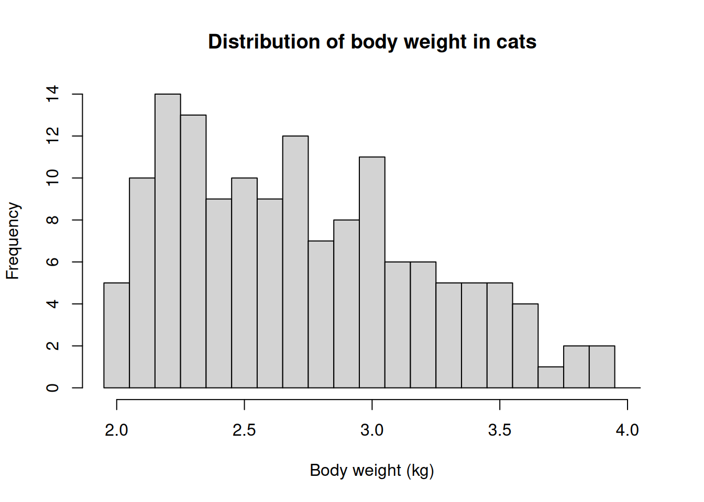
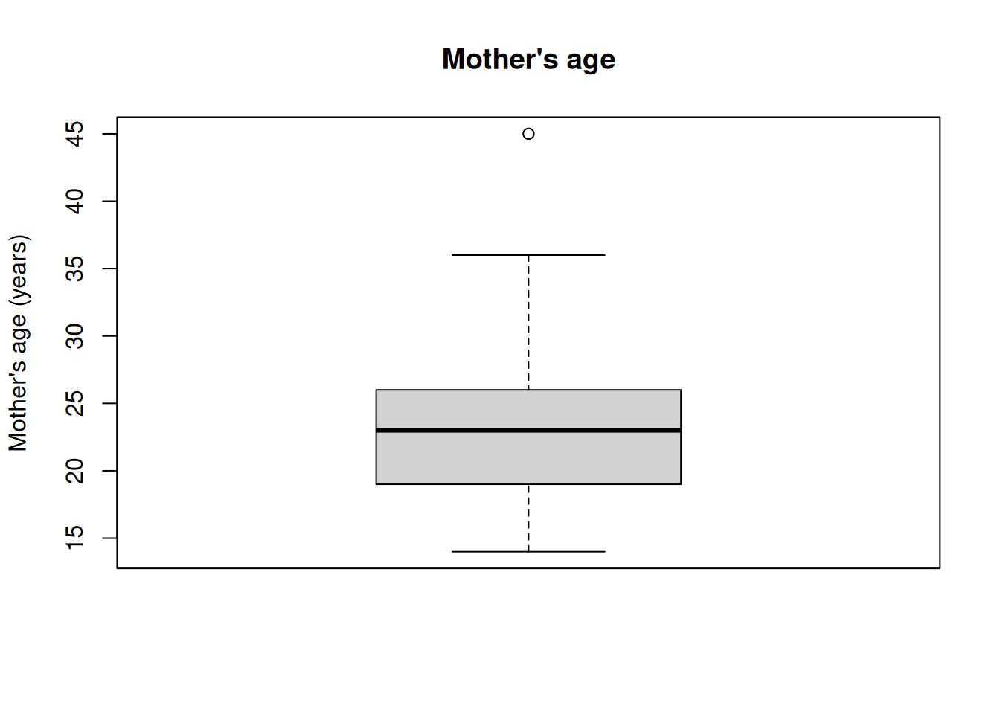
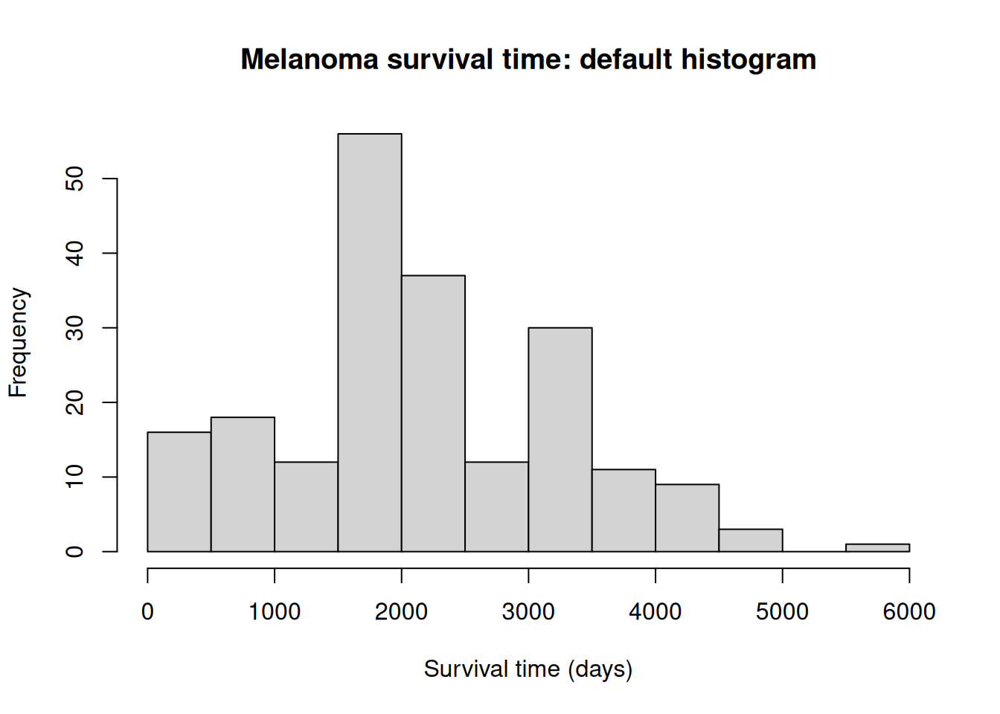
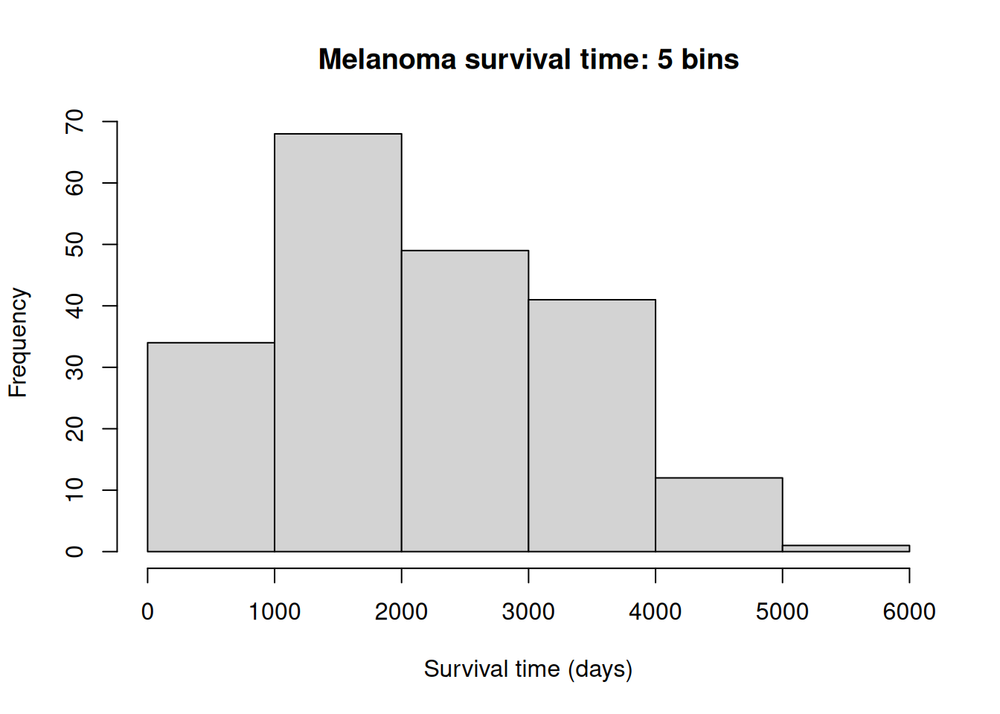
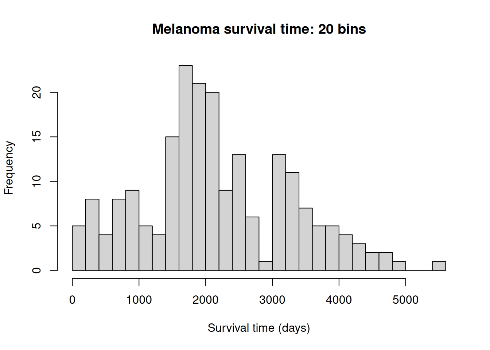
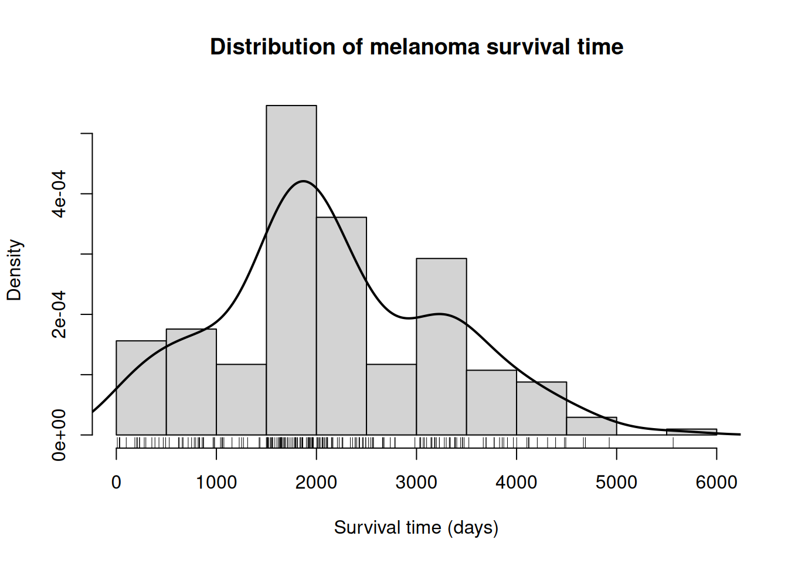
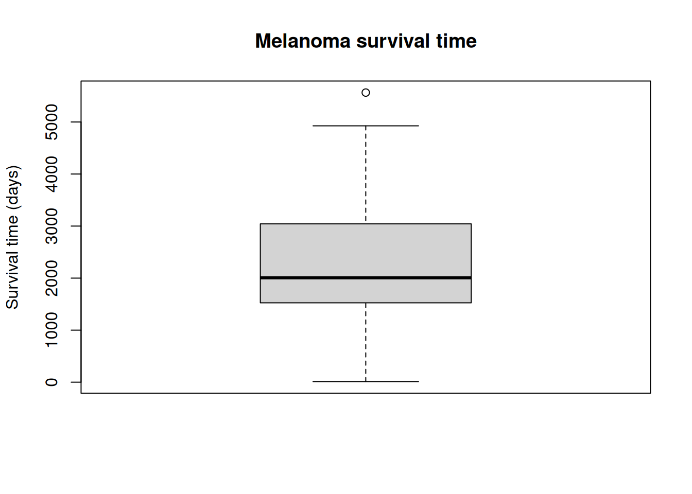
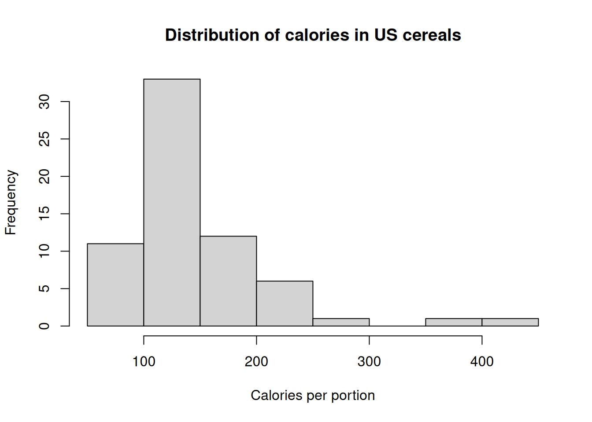
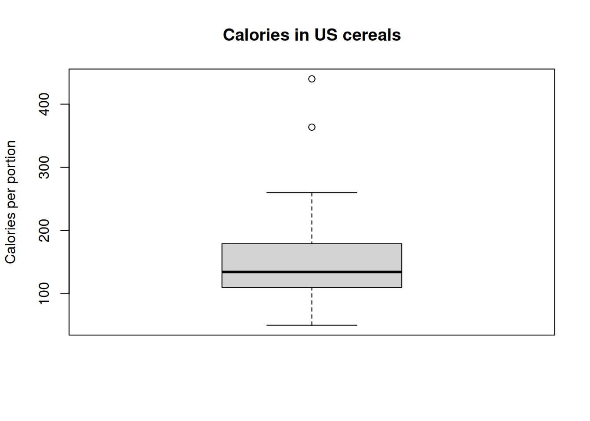

library(MASS)QSBS Practical — Descriptive Data Analysis in R: Answers
1 Getting started
The exercises below use datasets from the MASS package. The code is written so that the numerical results are calculated directly by R when the document is rendered. This makes the answers reproducible and avoids having to type numerical results by hand.
You can inspect the documentation for each dataset with, for example:
?cats
?birthwt
?Melanoma
?UScereal2 Exercise 1
In the cats dataset, generate the following location statistics for the Bwt variable: mean, 10% trimmed mean, and median. Do the resistant and non-resistant statistics differ substantially? What does that suggest about your data?
2.1 Answer
The mean, 10% trimmed mean and median can be calculated as follows:
mean(cats$Bwt)[1] 2.723611mean(cats$Bwt, trim = 0.10)[1] 2.692241median(cats$Bwt)[1] 2.7For this dataset the results are approximately:
- Mean: 2.724 kg
- 10% trimmed mean: 2.692 kg
- Median: 2.700 kg
The three values are quite close. The 10% trimmed mean is only about 0.03 kg lower than the ordinary mean. This indicates that the extreme observations have only a modest influence on the estimate of the centre of the distribution.
The data therefore do not appear to contain extremely influential observations that would strongly distort the mean. There is nevertheless a slight indication of a longer upper tail, because the mean is a little higher than the median.
A useful way to compare the statistics directly is:
c(
mean = mean(cats$Bwt),
trimmed_mean_10 = mean(cats$Bwt, trim = 0.10),
median = median(cats$Bwt)
) mean trimmed_mean_10 median
2.723611 2.692241 2.700000 The mean is a non-resistant measure because it is affected by extreme values. The trimmed mean and median are more resistant.
3 Exercise 2
In the cats dataset, find the mode of the Bwt variable. Generate a frequency table and determine if there are multiple modal values (other Bwt values that have nearly as many cases). Are those modal values close together, or separated by other values? If modes are separated by other values, what might that suggest about your data?
3.1 Answer
R does not have a built-in mode() function for finding the most frequent value of a numerical variable. The following code creates a frequency table and identifies the value(s) with the highest frequency:
bwt_freq <- table(cats$Bwt)
bwt_freq
2 2.1 2.2 2.3 2.4 2.5 2.6 2.7 2.8 2.9 3 3.1 3.2 3.3 3.4 3.5 3.6 3.7 3.8 3.9
5 10 14 13 9 10 9 12 7 8 11 6 6 5 5 5 4 1 2 2 max_freq <- max(bwt_freq)
bwt_freq[bwt_freq == max_freq]2.2
14 The modal body weight is 2.2 kg, with 14 observations.
It is also useful to sort the frequency table from highest to lowest:
sort(bwt_freq, decreasing = TRUE)
2.2 2.3 2.7 3 2.1 2.5 2.4 2.6 2.9 2.8 3.1 3.2 2 3.3 3.4 3.5 3.6 3.8 3.9 3.7
14 13 12 11 10 10 9 9 8 7 6 6 5 5 5 5 4 2 2 1 The next most frequent values include 2.3 kg (13 observations), 2.7 kg (12 observations) and 3.0 kg (11 observations).
Thus, there is not just one value that is overwhelmingly more frequent than all the others. Several values have relatively high frequencies.
The modal values are not all immediately adjacent. For example, the high frequencies around 2.2–2.3 kg and around 2.7–3.0 kg suggest that the distribution may contain more than one concentration of observations. In this particular dataset, this is biologically plausible because the data contain both female and male cats. Differences in body size between the sexes can contribute to a mixture of distributions.
However, a frequency table alone is not enough to establish that the distribution is genuinely bimodal. A histogram or density plot, preferably combined with information about sex, would provide better evidence.
For example:
hist(
cats$Bwt,
breaks = seq(1.95, 4.05, by = 0.1),
xlab = "Body weight (kg)",
main = "Distribution of body weight in cats"
)
4 Exercise 3
In the cats dataset, generate frequency and proportion tables to summarize cat sex. What proportion of cats are female?
4.1 Answer
The frequency table is:
table(cats$Sex)
F M
47 97 The proportion table is:
prop.table(table(cats$Sex))
F M
0.3263889 0.6736111 There are 47 female cats and 97 male cats, giving 144 cats in total.
The proportion that are female is therefore:
prop.table(table(cats$Sex))["F"] F
0.3263889 This is approximately 0.326, or 32.6%.
As percentages:
round(100 * prop.table(table(cats$Sex)), 1)
F M
32.6 67.4 So approximately one third of the cats in the dataset are female.
5 Exercise 4
In the birthwt dataset, find the standard deviation (SD) of mother’s age. Interpret it. Generate a boxplot of the age variable. Using the boxplot rule, identify any extreme values (outliers). Explain how deleting that value would affect the standard deviation. Next, remove the data values with an age below 45 years and calculate the SD again. How much did the SD change? Repeat this analysis with the IQR, and explain why the IQR is not affected by removal of the outlier.
5.1 Answer
The standard deviation of mother’s age is approximately 5.30 years.
sd(birthwt$age)[1] 5.298678A standard deviation of about 5.3 years means that individual mother’s ages typically differ from the sample mean age by roughly 5 years. The mean age is approximately 23.24 years.
mean(birthwt$age)[1] 23.2381sd(birthwt$age)[1] 5.298678The boxplot is:
boxplot(
birthwt$age,
ylab = "Mother's age (years)",
main = "Mother's age"
)
The boxplot rule defines an observation as an outlier if it lies below
[ Q_1 - 1.5 IQR ]
or above
[ Q_3 + 1.5 IQR. ]
We can obtain these quantities directly:
q <- quantile(birthwt$age, c(0.25, 0.50, 0.75))
iqr_age <- IQR(birthwt$age)
q25% 50% 75%
19 23 26 iqr_age[1] 7lower_fence <- q[1] - 1.5 * iqr_age
upper_fence <- q[3] + 1.5 * iqr_age
c(lower_fence = lower_fence, upper_fence = upper_fence)lower_fence.25% upper_fence.75%
8.5 36.5 The quartiles are approximately 19 and 26 years, so the IQR is 7 years. The upper fence is therefore
[ 26 + 1.5(7) = 36.5. ]
The observation at 45 years is consequently a boxplot-defined outlier.
We can identify the outlier directly:
box_stats <- boxplot.stats(birthwt$age)
box_stats$out[1] 455.2 Effect of removing the outlier on the SD
The SD is sensitive to extreme observations because it is calculated from squared deviations from the mean. An observation far from the mean therefore contributes disproportionately to the sum of squared deviations.
We can compare the original SD with the SD after removing the 45-year-old observation:
sd_original <- sd(birthwt$age)
age_without_outlier <- birthwt$age[birthwt$age < 45]
sd_without_outlier <- sd(age_without_outlier)
c(
original_SD = sd_original,
SD_without_45 = sd_without_outlier,
change = sd_without_outlier - sd_original,
percentage_change =
100 * (sd_without_outlier - sd_original) / sd_original
) original_SD SD_without_45 change percentage_change
5.2986779 5.0675576 -0.2311203 -4.3618492 The original SD is about 5.30 years, whereas after removing the 45-year observation it is about 5.07 years. Thus, the SD decreases by roughly 0.23 years, or about 4–5%.
This illustrates that the outlier has a noticeable, but not enormous, influence on the SD.
5.3 What happens to the IQR?
The IQR is
[ IQR = Q_3 - Q_1. ]
Calculate it before and after removing the 45-year observation:
iqr_original <- IQR(birthwt$age)
iqr_without_outlier <- IQR(age_without_outlier)
c(
original_IQR = iqr_original,
IQR_without_45 = iqr_without_outlier,
change = iqr_without_outlier - iqr_original
) original_IQR IQR_without_45 change
7 7 0 The IQR is 7 years both before and after removing the outlier.
This happens because the IQR is based only on the middle 50% of the observations. The 45-year-old observation is at the extreme upper end of the distribution and is therefore not involved in determining the central quartiles in any meaningful way.
This illustrates the important distinction between:
- SD: non-resistant and sensitive to extreme observations.
- IQR: resistant and much less sensitive to extreme observations.
6 Exercise 5
In the Melanoma dataset, generate a histogram of survival time (let R decide on the bin interval). Use breaks = 5 and breaks = 20 to generate two more histograms of the survival time data. Which one oversmooths? Undersmooths? In terms of insights the plot provides into properties of survival time, what is lost between the first (default bin width) and the breaks = 5 histogram? Compare the default histogram to the breaks = 20 histogram: What are you seeing in the breaks = 20 plot that may detract from your learning about survival time?
6.1 Answer
First, create the default histogram:
hist(
Melanoma$time,
xlab = "Survival time (days)",
main = "Melanoma survival time: default histogram"
)
Now use five bins:
hist(
Melanoma$time,
breaks = 5,
xlab = "Survival time (days)",
main = "Melanoma survival time: 5 bins"
)
And finally use 20 bins:
hist(
Melanoma$time,
breaks = 20,
xlab = "Survival time (days)",
main = "Melanoma survival time: 20 bins"
)
The 5-bin histogram oversmooths the data. There are so few bins that important features of the distribution are hidden. In particular, the broad concentration of observations in the middle of the distribution and the long upper tail become less apparent.
The 20-bin histogram undersmooths the data. It contains much more small-scale variation, including irregular peaks and troughs that may simply be caused by sampling variation.
The default histogram provides a compromise between these two extremes.
The main lesson is that the choice of histogram bin width affects the apparent shape of a distribution. A histogram with too few bins can hide structure, whereas one with too many bins can make random variation look like meaningful structure.
7 Exercise 6
Generate a probability histogram of survival time from the Melanoma dataset (use the default bin interval) and add a rugplot and a density plot to the histogram. What does the density plot show you about the distribution of survival times in the population of melanoma patients?
7.1 Answer
A probability histogram can be produced using probability = TRUE. The density estimate can then be added using density().
hist(
Melanoma$time,
probability = TRUE,
xlab = "Survival time (days)",
ylab = "Density",
main = "Distribution of melanoma survival time"
)
rug(Melanoma$time)
lines(
density(Melanoma$time),
lwd = 2
)
The rugplot displays the individual observations along the horizontal axis. This is useful because it shows where the actual observations occur rather than only showing the grouped counts represented by the histogram bins.
The density curve is a smoothed estimate of the distribution of the observed survival times. For these data it shows a broad, unimodal concentration of survival times around roughly 1,500–2,500 days, followed by a relatively long right-hand tail.
Thus, the distribution is positively (right) skewed: most observations occur at shorter or intermediate survival times, while a smaller number of patients have much longer observed survival times.
An important qualification is that this is the distribution of the observed survival times. Survival data can involve censoring, and a simple histogram or density estimate does not account for censoring. A formal survival analysis would normally use methods such as the Kaplan–Meier estimator. For this exercise, however, the histogram and density plot are useful for learning about the shape of the observed variable.
8 Exercise 7
Generate a boxplot of survival time from the Melanoma dataset. Find and interpret the 5-number summary from the boxplot output. If there are boxplot-defined outliers in the data, find their values too. From the boxplot, does it appear that survival time data are skewed, and if so in what direction? Check that with a skew statistic.
8.1 Answer
First generate the boxplot:
boxplot(
Melanoma$time,
ylab = "Survival time (days)",
main = "Melanoma survival time"
)
The five-number summary can be obtained from boxplot.stats():
box_stats <- boxplot.stats(Melanoma$time)
box_stats$stats[1] 10 1525 2005 3042 4926The five-number summary is approximately:
| Statistic | Survival time (days) |
|---|---|
| Minimum | 10 |
| First quartile (Q1) | 1525 |
| Median | 2005 |
| Third quartile (Q3) | 3042 |
| Maximum non-outlying value | 4926 |
The minimum survival time is 10 days. Half of the observations are between approximately 1525 and 3042 days, and the median survival time is approximately 2005 days.
The value 5565 days is above the upper boxplot fence and is therefore classified as an outlier:
box_stats$out[1] 5565We can also calculate the fences explicitly:
q <- quantile(Melanoma$time, c(0.25, 0.5, 0.75))
iqr_time <- IQR(Melanoma$time)
lower_fence <- q[1] - 1.5 * iqr_time
upper_fence <- q[3] + 1.5 * iqr_time
c(
lower_fence = lower_fence,
upper_fence = upper_fence,
IQR = iqr_time
)lower_fence.25% upper_fence.75% IQR
-750.5 5317.5 1517.0 The upper tail is longer than the lower tail, and the outlier occurs on the upper side. The boxplot therefore suggests right skewness.
A simple moment-based skewness statistic can be calculated without requiring an additional package:
x <- Melanoma$time
skewness <- mean((x - mean(x))^3) / sd(x)^3
skewness[1] 0.3277952This gives a skewness statistic of approximately 0.33, which is positive and therefore consistent with right skewness.
The skewness is not extremely large, so the distribution is not dramatically asymmetric. Nevertheless, both the boxplot and the skewness statistic indicate a longer right-hand tail.
9 Exercise 8
Using the UScereal dataset, do a descriptive analysis of the calories variable. Generate location and variability statistics as well as a plot of the variable’s distribution. Summarize your findings in a few sentences.
9.1 Answer
The calories variable gives the number of calories in one portion of cereal. The first step is to inspect some basic descriptive statistics:
summary(UScereal$calories) Min. 1st Qu. Median Mean 3rd Qu. Max.
50.0 110.0 134.3 149.4 179.1 440.0 We can obtain a more complete set of descriptive statistics:
calories <- UScereal$calories
c(
n = length(calories),
mean = mean(calories),
median = median(calories),
sd = sd(calories),
variance = var(calories),
IQR = IQR(calories),
minimum = min(calories),
maximum = max(calories),
range = diff(range(calories))
) n mean median sd variance IQR minimum
65.00000 149.40826 134.32836 62.41187 3895.24210 69.10448 50.00000
maximum range
440.00000 390.00000 The main results are approximately:
- Mean: 149.4 calories
- Median: 134.3 calories
- SD: 62.4 calories
- IQR: 69.1 calories
- Minimum: 50 calories
- Maximum: 440 calories
The five-number summary is:
quantile(calories) 0% 25% 50% 75% 100%
50.0000 110.0000 134.3284 179.1045 440.0000 A histogram gives a first impression of the distribution:
hist(
calories,
xlab = "Calories per portion",
main = "Distribution of calories in US cereals"
)
A boxplot provides a complementary view:
boxplot(
calories,
ylab = "Calories per portion",
main = "Calories in US cereals"
)
The mean is higher than the median, and the distribution contains some cereals with substantially higher calorie contents than most cereals. The histogram and boxplot therefore indicate positive (right) skewness.
The maximum value of 440 calories is particularly high compared with the central part of the distribution. Consequently, the mean is pulled upwards relative to the median.
A skewness statistic confirms this:
mean((calories - mean(calories))^3) / sd(calories)^3[1] 2.189706The skewness is approximately 2.3, indicating substantial right skewness.
For this variable, the median and IQR are therefore useful complementary measures to the mean and SD because they are less influenced by the unusually high-calorie cereals.
10 Overall conclusions
These exercises illustrate several important principles of descriptive data analysis:
Use several measures of centre.
The mean, median and trimmed mean answer related but different questions and have different sensitivities to extreme observations.Use resistant statistics when appropriate.
The median and IQR are less affected by extreme observations than the mean and SD.Always combine numerical summaries with plots.
Histograms and boxplots reveal features such as skewness, multimodality and potential outliers that can be difficult to recognize from numerical summaries alone.Histogram bin width matters.
Too few bins can oversmooth a distribution, whereas too many bins can make random fluctuations appear important.Outliers should be investigated, not automatically deleted.
An outlier may be an error, but it may also represent a genuine observation from the population.The distribution of a variable matters for subsequent analysis.
Strong skewness or extreme values can affect the choice of summary statistics and, in later analyses, the choice of statistical model.For survival data, descriptive plots are only a first step.
If observations are censored, a histogram of observed survival times does not fully describe the underlying survival distribution. Survival-analysis methods are required to account properly for censoring.